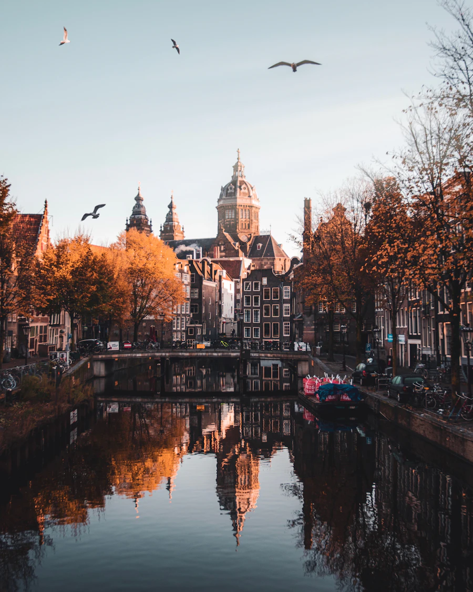
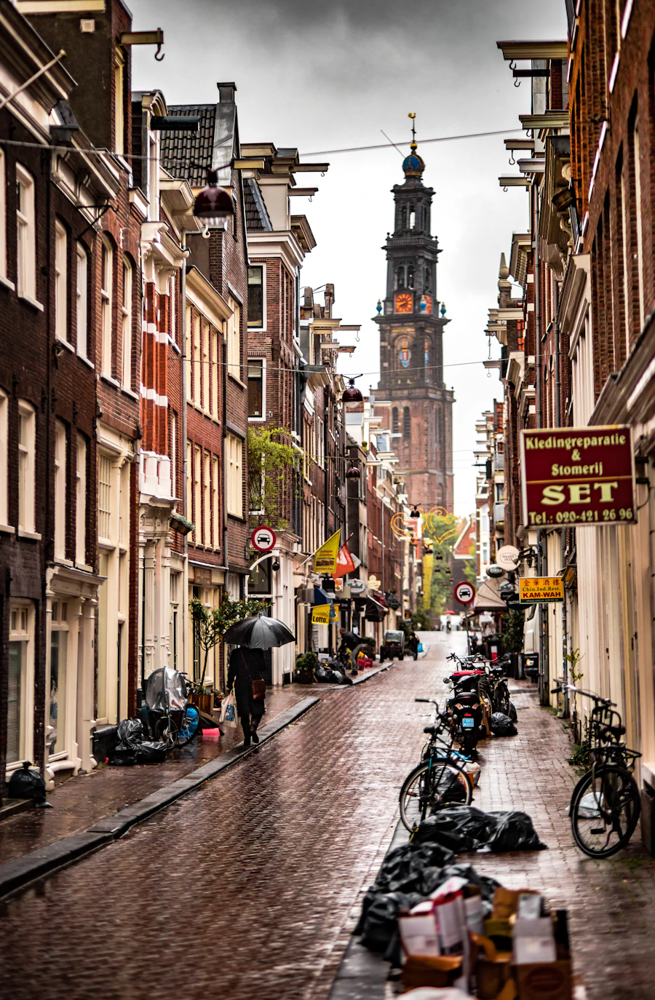
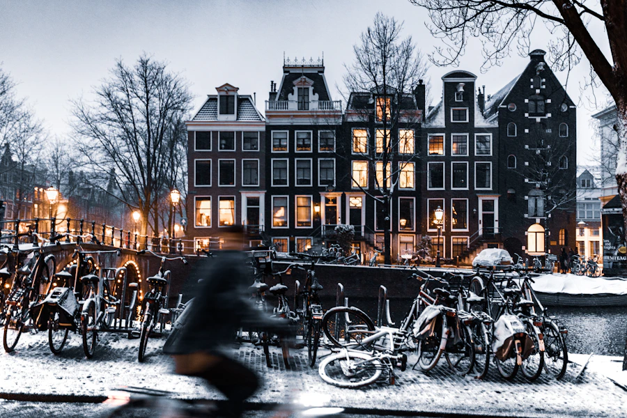
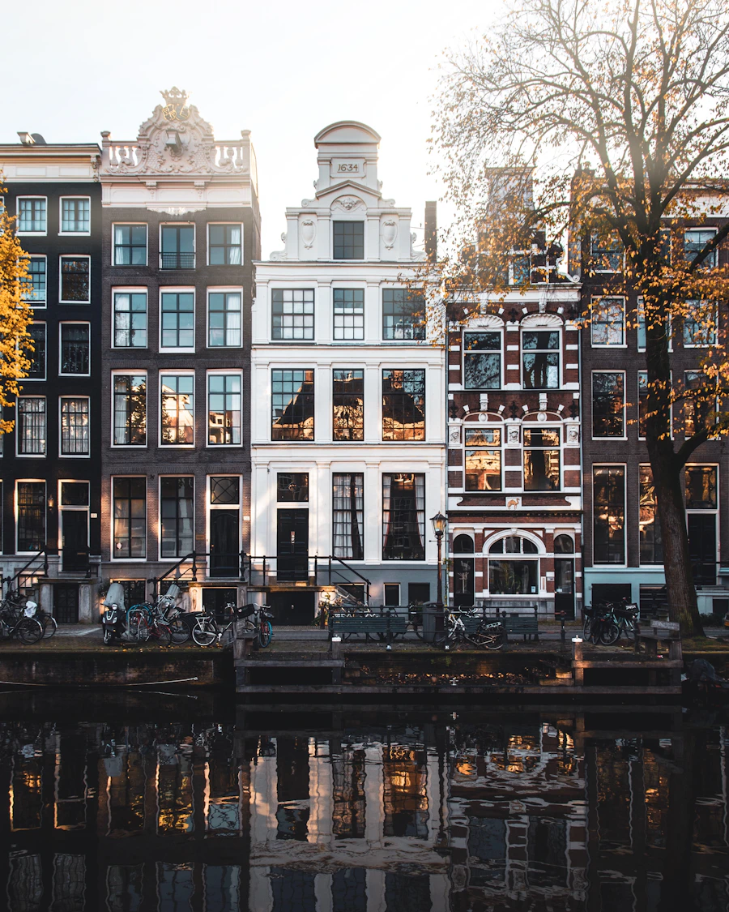

I'm Koen, an Amsterdam-based Staff Engineer at Shopify, where I've spent the last decade helping people turn their passion into their job. These days I'm mostly thinking about AI agents: how to build them, and how to make them secure and reliable enough to actually trust. It feels a lot like when I first started coding at 15. If that excites you too, say hi.